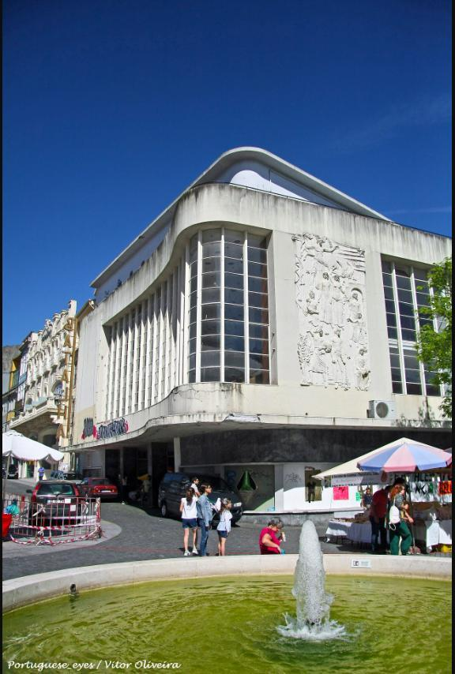

Fantasporto, the Porto International Film Festival, returns for its 46th edition from February 27 to March 8, once again based at the Cine-Teatro Batalha in the heart of the city. The festival is one of Europe's oldest dedicated to horror, science fiction and fantasy cinema, alongside a broader international competition strand.
The festival traces its origins to 1980, when film critics Mário Dorminsky and Beatriz Pacheco Pereira and painter José Manuel Pereira sketched out the idea over coffee in Porto. Its first edition ran in 1981, screening the first Chinese animated feature shown in Europe, and the festival has since been credited with introducing New Zealand and South Korean cinema to European audiences years ahead of the mainstream.

The festival's home has its own history: the Cine-Teatro Batalha opened as the Salão High Life cinema in 1908, before being rebuilt in Art Deco style by architect Artur Andrade in 1947 as the Cinema Batalha. Restored and reopened in recent years as the Batalha Centro de Cinema, the building anchors Praça da Batalha as one of Porto's landmark cultural venues.
Fantasporto has been named among the world's best horror festivals and one of the "25 Coolest Film Festivals in the World" by MovieMaker Magazine, and its programming has regularly drawn coverage from Variety and the International Film Guide over more than four decades.
Editor's note: Image Media did not have a team on the ground for this event. The images above are file photographs of the festival's venue, sourced from Wikimedia Commons under Creative Commons licences.